UX Case Study · Solo Project · 2022
A vocabulary app for bilingual users — designed around real research, tested with real users, and iterated based on what they actually said.
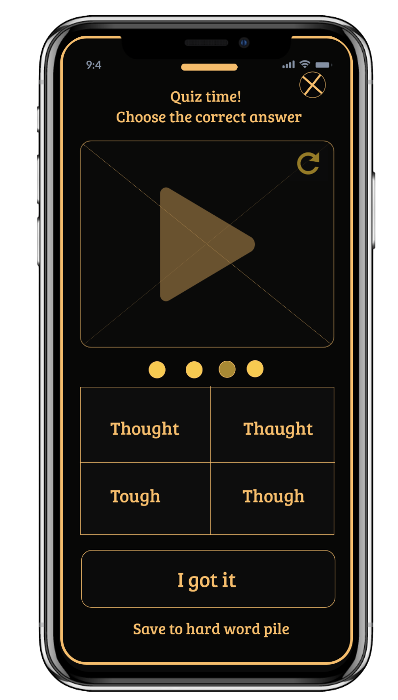
Bilingual users are underserved by mainstream language apps. Most vocabulary tools assume a single native language and a single target — they don't account for users who already think across two languages and want a third.
"I continuously need to go to Google Translate to translate the word to my first language so I understand better what it means."
BeeLingual was designed to remove that detour — showing every word in English plus the user's preferred second language. The project ran through the full UX cycle: research, persona definition, IA, prototyping, usability testing with 4 users, and design iteration based on what they revealed.
Research started with a competitive audit of three vocabulary apps — WordUp, Vocabulary, and Word of the Day — followed by user interviews with bilingual learners actively studying a third language.
Key findings
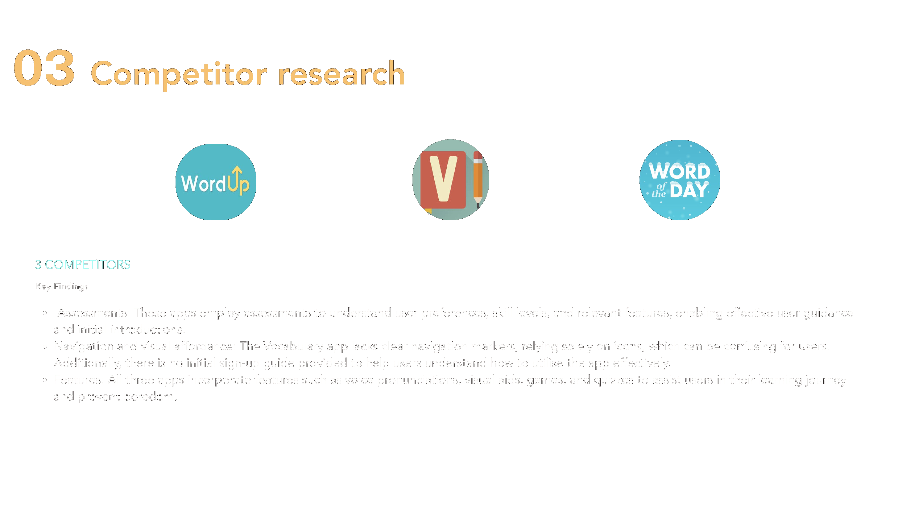
Competitor audit — three vocabulary apps assessed for assessments, navigation patterns, and feature gaps
Research findings were synthesised into a proto-persona — Lulu, the bilingual professional — whose behaviours, needs and goals drove every subsequent design decision.
38, born in Iran, lives in London. Full-time architect. Speaks Persian and English, learning French for work. Recently divorced, no children. Loves chess, travel, films. Commutes 1–1.5 hours daily.
"I'm always learning new vocabulary because English is not my first language. To sound smart and professional at work, I need to enrich my vocabulary."
User & job stories
Problem & hypothesis
Lulu needs the option to see definitions in her first language so she doesn't have to switch to Google Translate every time.
She's unfamiliar with different accents — real human pronunciations matter so she can confidently follow conversations at work and socially.
A vocabulary app that is simple, with progress tracking and reminders, paired with real human pronunciations, will keep Lulu engaged.
The bilingual translation feature — showing meanings in the user's choice of language, not just English — will save her time and make learning stick.
Two core task flows were mapped before any visual design: learning a new word with multi-language translation, and playing a vocabulary game with a friend. Onboarding asks for both a target language and a native language up front — directly enabling the bilingual feature throughout the rest of the app.
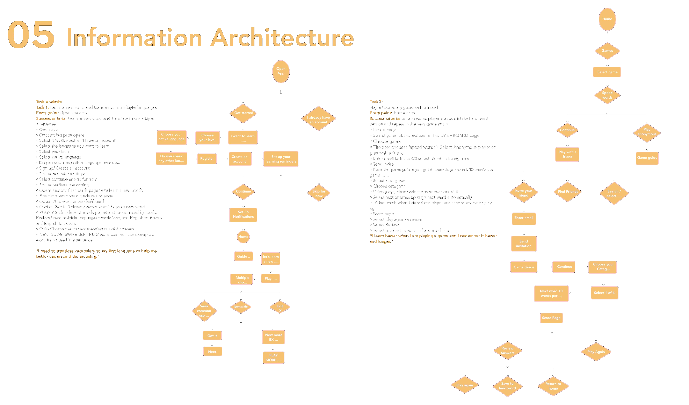
Full task analysis for both core flows, mapped before design started
Four fidelity stages, each validating the previous before adding resolution.
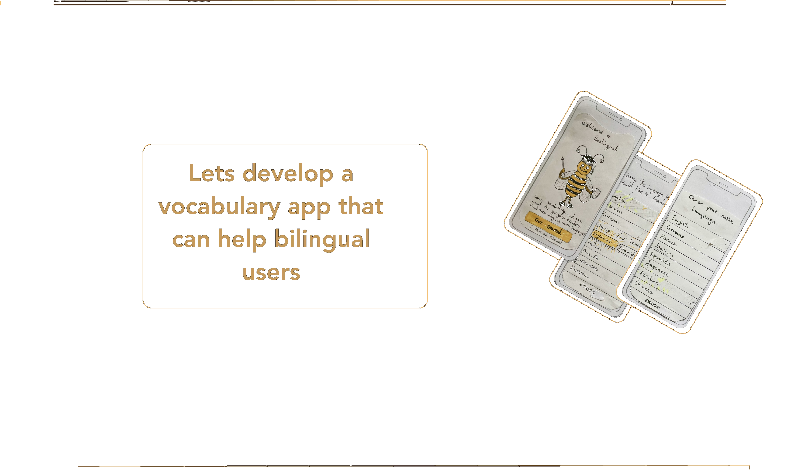
Hand-drawn sketches — earliest concept work on paper
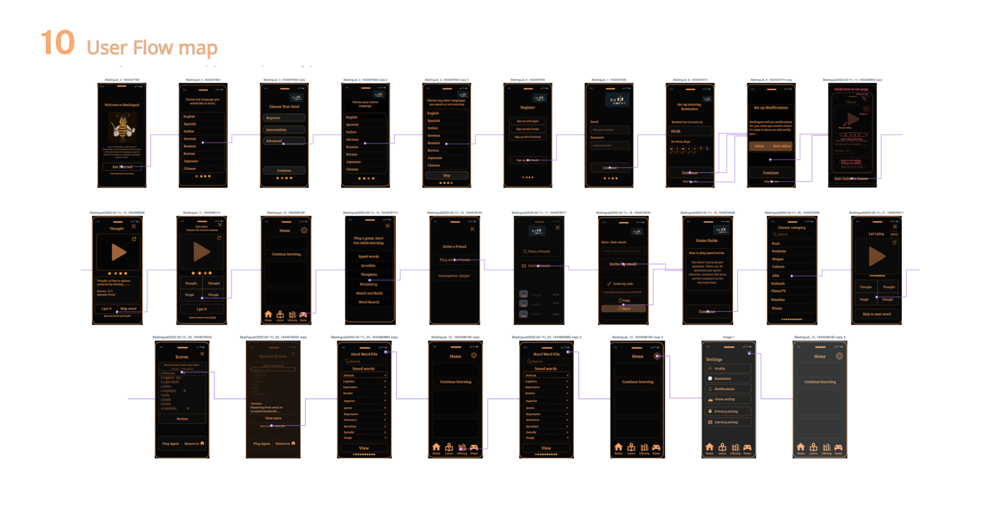
Wireframes translating sketches into digital screens
Seven core screens taking the research insights into a working hi-fidelity design. Each screen answers a specific need or finding.
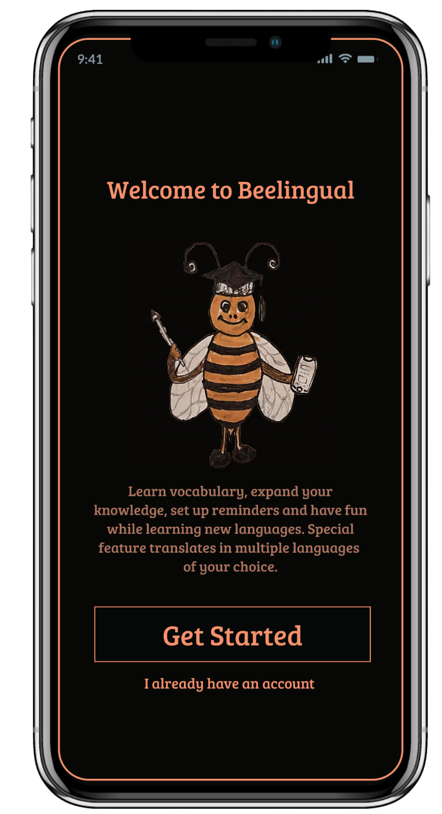
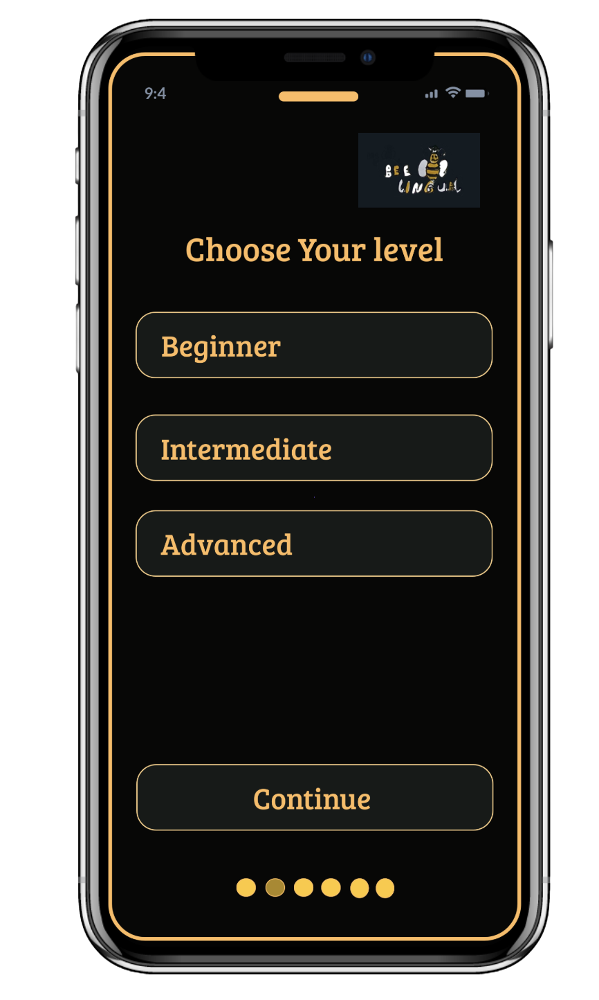
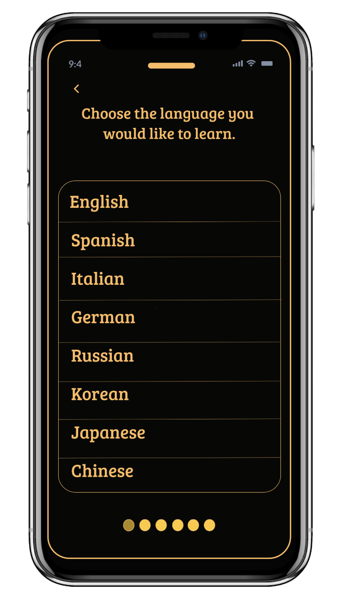
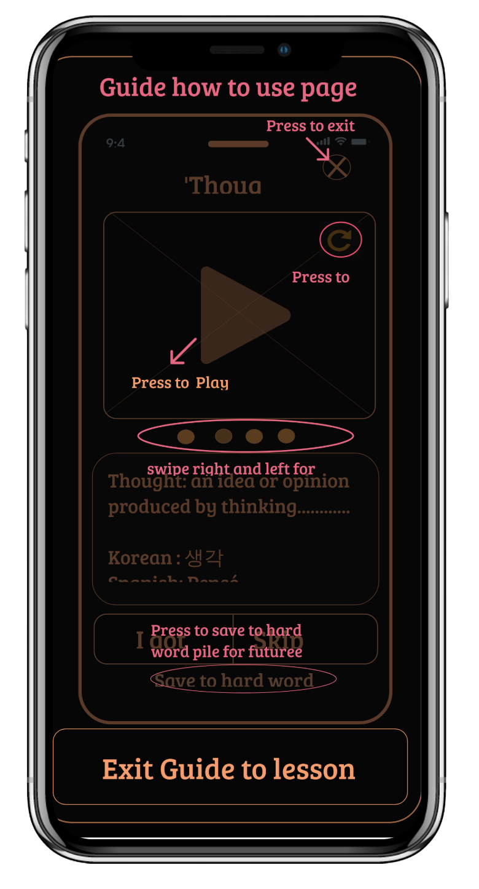
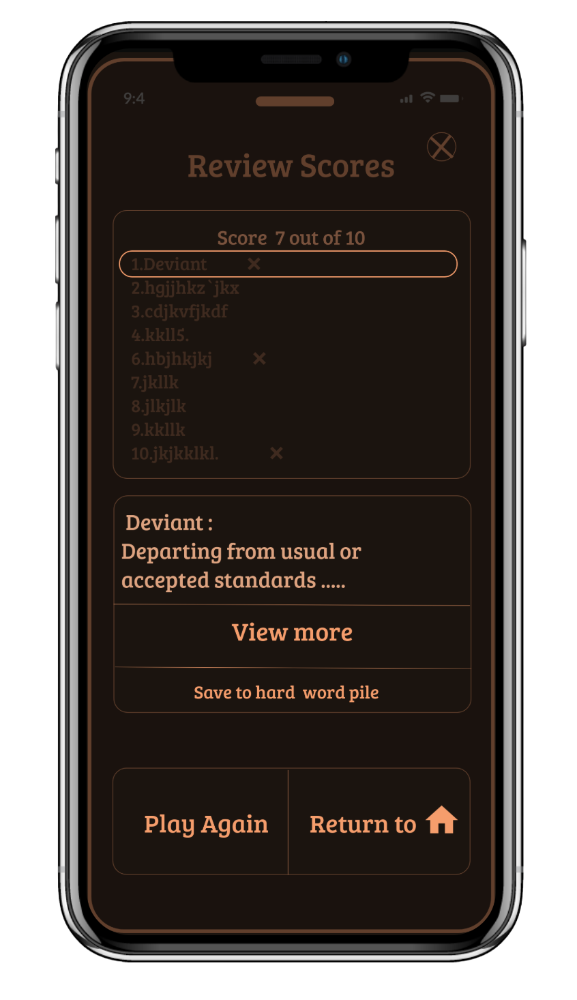
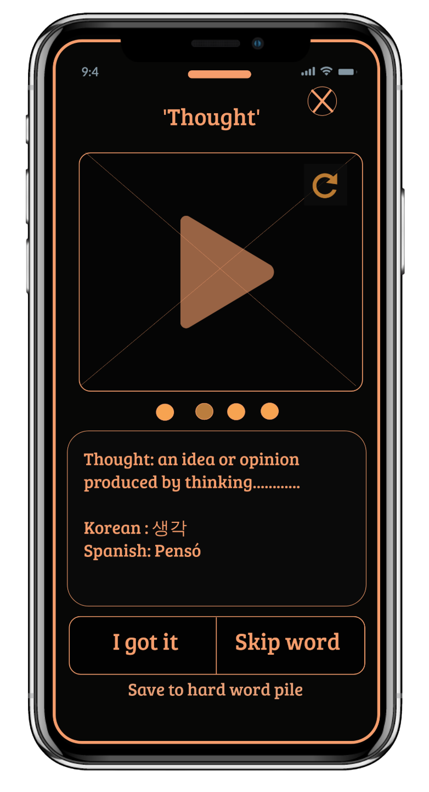
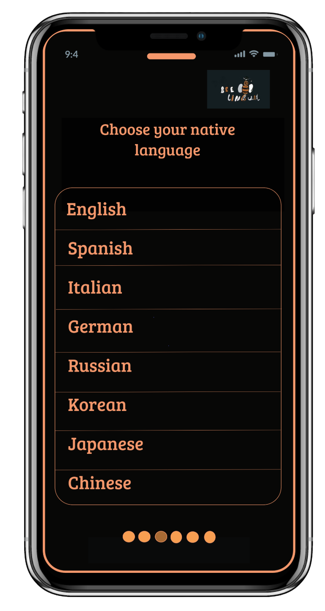
After hi-fi prototype was complete, I recruited 4 users for usability testing. Each ran through scripted direct tasks and realistic scenario tasks — covering registration, gameplay with a friend, finding the Hard Word Pile, and adjusting profile settings.
Findings were synthesised in a usability test report, and the prototype was revised based on what users couldn't do.
Case in point: The Hard Word Pile
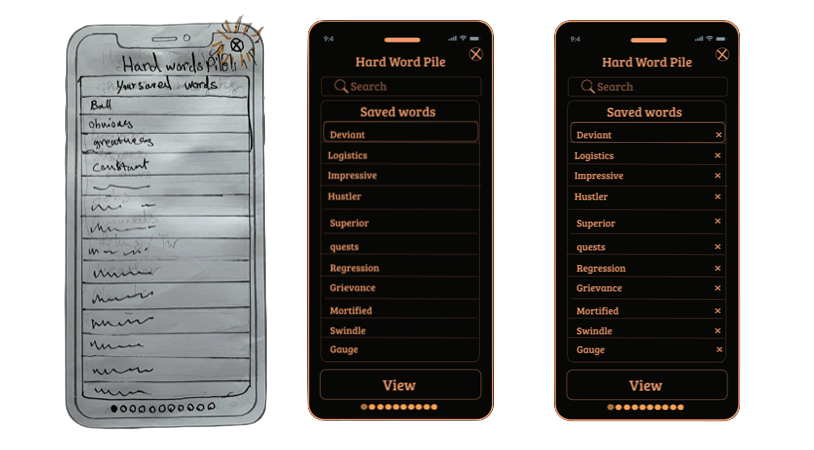
Sketch → v1 → v2 — the Hard Word Pile redesign after usability testing
The Hard Word Pile started as a simple saved-words list. Users in testing tried to remove words they'd mastered — and couldn't. Without a delete affordance, the list grew indefinitely and users abandoned it.
The clickable Marvel prototype covers both core flows end-to-end — onboarding through to gameplay, scoring, and the Hard Word Pile. Built and tested in 2022.
BeeLingual shipped as a complete clickable prototype with research, persona work, IA, hi-fi design, usability testing, and revised iteration all evidenced. The case study was built around bilingual users — a real underserved audience — rather than the generic "language learner" most apps chase.
Every core feature traces back to a specific behaviour, need or goal in Lulu's profile. The multi-language translation directly answers her Google Translate frustration. The Hard Word Pile delete buttons came from real test users. No feature was a designer assumption.
Record actual human pronunciations from local speakers — users specifically asked for this. Run longitudinal testing to measure retention and habit formation over 30 days. Expand from 8 languages to cover under-served bilingual demographics.
Every stage documented and shippable — from competitor audit and user interviews through to usability tested, iterated hi-fi prototype.
Want to talk about your project?
beedesignux@gmail.com →